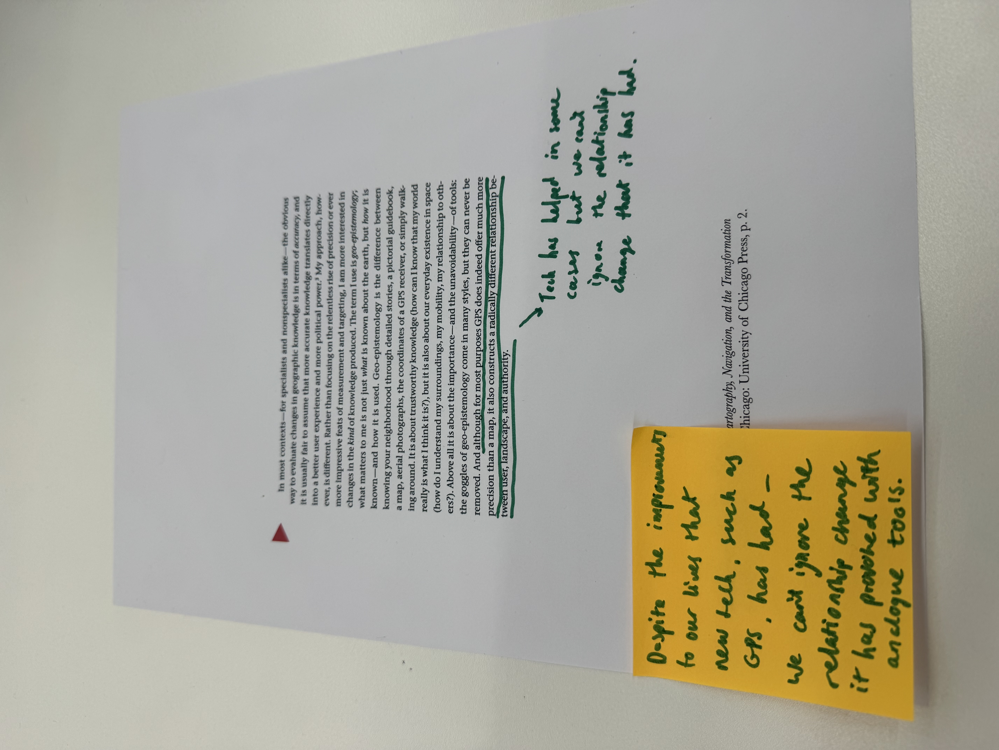
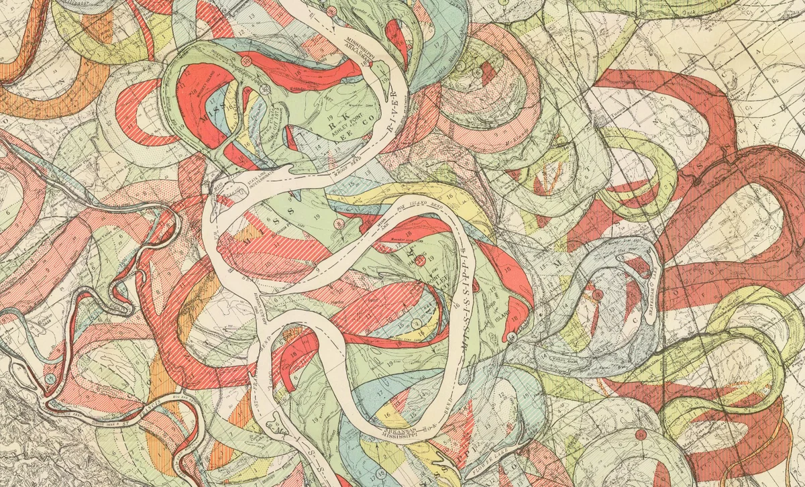

Geoepistemology
This week we delved into the idea of geoepistemology, a term coined by American historian and professor William Rankin. The idea behind this term is that our knowledge about the surroundings that we live in — and the way that we develop this knowledge — has drastically changed following the development of new technology such as GPS and digital mapping.
What I personally took this extract to mean is that yes we may accept that technology has helped us to map our surroundings faster and locate people and places more accurately, however this new dependency on technology has drastically changed the way in which we use analogue mapping methods. To some generations, analogue tools may even become obselete. We cannot ignore this change in relationship between us and what was once a pioneering technology.

For this in-class session, we were also each assigned a different map to research. The map I was assigned traces the Mississippi River over thousands of years, highlighting how its meanders have shifted over time. It stands out as a strong example of a visual essay, as it shows a large amount of data within a single, visually engaging and artistic image. Some websites were even selling the map as an art piece (Etsy.com).

References
Harold Fisk Map of Mississippi River - available at: https://publicdomainreview.org/collection/maps-of-the-lower-mississippi-harold-fisk/
Rankin, W. (2016) 'Introduction: Territory and the Mapping Sciences', in After the Map. Chicago: University of Chicago Press, pp. 1–20.